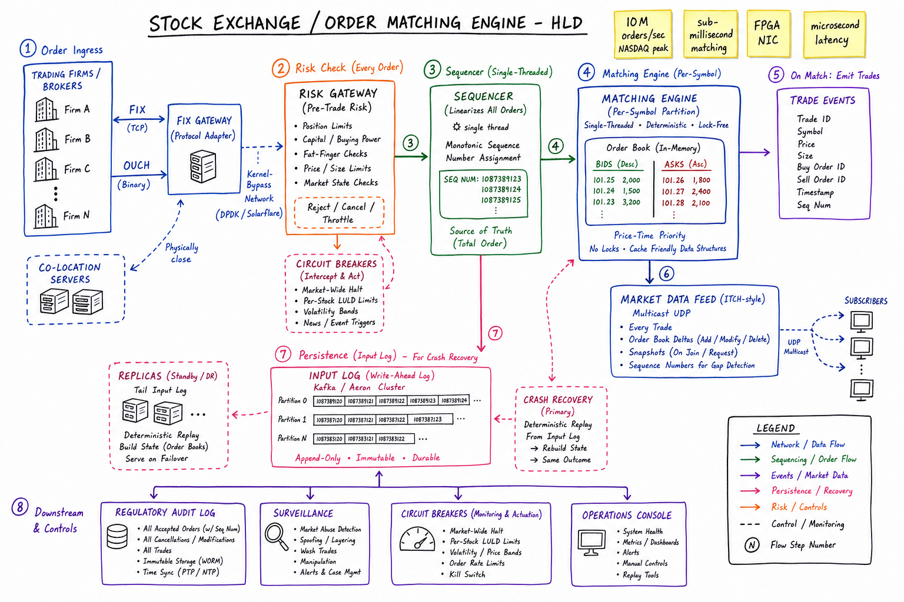
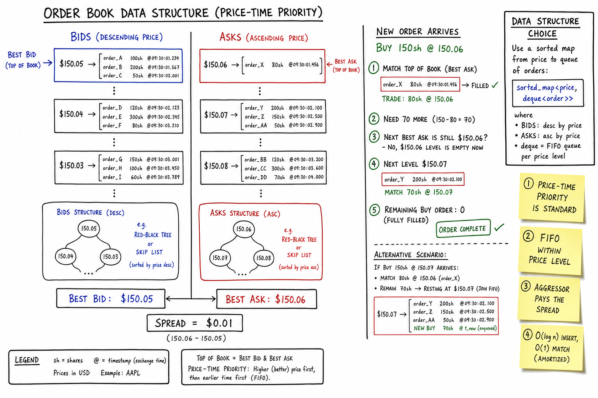
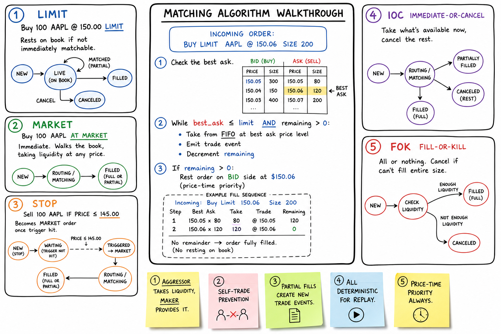

Stock Exchange / Order Matching Engine // HLD
Central limit order book (CLOB) matching at exchange scale. 100M orders/day, 1M orders/sec at the opening bell, p99 match latency <1ms. Single-threaded matching per symbol, price-time priority, in-memory order books with WAL + deterministic replay, market data fan-out via Kafka multicast.

Whiteboard HLD: clients (brokers, market makers) connect via FIX/REST gateway. Order Gateway validates, risk-checks, and routes each order to the MatchingEngine shard for that symbol (hash(symbol) → shard). Each shard runs single-threaded per symbol: append order to WAL, insert into in-memory OrderBook, run price-time matching loop, emit Trade events. Market Data Service consumes trades + book deltas from Kafka, builds L2 depth snapshots, fans out via WebSocket/multicast. Regulatory Tape persists every trade for SEC/FINRA audit. Hot symbols (AAPL, SPY) get dedicated shards.
01 — Requirements
Functional
- Place order: submit buy/sell with symbol, side, quantity, order type (market, limit, stop, stop-limit)
- Cancel order: remove resting order from book by order_id
- Modify order: cancel-replace (amend price/qty on resting order)
- Matching: price-time priority; partial fills supported
- Trade reporting: immediate execution reports to submitting broker
- Real-time quotes: best bid/ask, L2 depth, last trade, volume
- Market data feed: snapshot + incremental updates for subscribers
- Regulatory tape: immutable audit log of every order and trade
Non-Functional
- Throughput: 100M orders/day (~1.2K/sec avg); peak 1M orders/sec at market open
- Latency: p99 order-to-ack <1ms inside matching engine; end-to-end <10ms colocated
- Fairness: strict price-time priority; no front-running; deterministic ordering
- Correctness: exactly-once matching semantics per order; no lost or duplicate trades
- Durability: survive process crash without losing accepted orders (WAL + replay)
- Availability: 99.999% during market hours; failover <30s with hot standby
- Auditability: every state transition reconstructable for regulators
01a — Core Entities
| Entity | Key Fields | Notes |
|---|---|---|
| Order | order_id, client_order_id, symbol, side (BUY/SELL), type (MARKET/LIMIT/STOP), price, qty, filled_qty, status, timestamp_ns, user_id | Immutable identity; mutable filled_qty and status. Nanosecond timestamp for time priority. |
| OrderBook | symbol, bids (PriceLevel[]), asks (PriceLevel[]), sequence_num | One per symbol, in-memory. Bids sorted desc price; asks sorted asc. See section 05. |
| PriceLevel | price, total_qty, order_queue (FIFO linked list) | All orders at same price; time priority within level via FIFO queue. |
| Trade | trade_id, symbol, buy_order_id, sell_order_id, price, qty, executed_at_ns | Append-only. Price = resting (passive) order price per price-time rules. |
| Symbol | symbol, tick_size, lot_size, circuit_breaker_pct, shard_id | Instrument metadata. tick_size drives price level granularity. |
| MatchingEngine Shard | shard_id, assigned_symbols[], wal_offset, thread_id | Owns N symbols. Single-writer thread per symbol — no locks on hot path. See concurrency control. |
| MarketDataSnapshot | symbol, bids[], asks[], last_trade, sequence | Periodic full book snapshot for late joiners. |
| BookDelta | symbol, side, price, qty_delta, sequence | Incremental update after each insert/cancel/fill. |
| WAL Entry | offset, event_type, payload, checksum | Append-only log: ORDER_NEW, ORDER_CANCEL, TRADE_EXECUTED. Source of truth for replay. |
| ExecutionReport | order_id, status, filled_qty, avg_price, remaining_qty | Returned to broker on every state change (NEW, PARTIAL, FILLED, CANCELLED). |
01b — API Design
Order entry (FIX-like or REST)
POST /orders
Idempotency-Key: {client_order_id}
body: {
symbol: "AAPL",
side: "BUY",
type: "LIMIT",
price: 182.50,
qty: 100,
time_in_force: "DAY"
}
-> 201 {
order_id: "ORD-928471",
status: "NEW" | "PARTIAL" | "FILLED",
fills: [{ trade_id, price, qty, ts }],
remaining_qty: 40
}
errors: 400 (invalid), 422 (risk reject), 503 (shard unavailable)
DELETE /orders/{order_id}
-> 200 { status: "CANCELLED", cancelled_qty: 60 }
PUT /orders/{order_id} # cancel-replace
body: { price: 183.00, qty: 150 }
-> 200 { new_order_id, status }
Market data (WebSocket + REST snapshot)
WS /marketdata/subscribe
subscribe: { symbols: ["AAPL","MSFT"], depth: 10 }
<- snapshot: { symbol, bids: [[price,qty],...], asks: [...], seq }
<- delta: { symbol, side, price, qty_delta, seq }
GET /marketdata/{symbol}/book?depth=20
-> { bids, asks, last_trade, seq }
WS /marketdata/trades
subscribe: { symbols: ["AAPL"] }
<- trade: { trade_id, symbol, price, qty, ts }
Internal (shard routing)
route(order) -> shard_id = hash(symbol) mod N
hot symbols override to dedicated shard
MatchingEngine.submit(order) -> ExecutionReport
1. append WAL
2. insert book + match loop
3. emit Trade + BookDelta to Kafka
4. return ack to gateway
The non-obvious contract:client_order_idis the idempotency key — retries must not double-place. Execution reports are the source of truth for brokers, not HTTP status codes. Market data uses monotonicsequencenumbers; gaps trigger snapshot resync. Cancel is best-effort if order already filled (return 409 with current state).
02 — Estimation
Trading day: 6.5 hours = 23,400 sec Orders/day: 100M Avg orders/sec: 100M / 23400 ~= 4,300/sec Peak (opening bell): 1M orders/sec for ~30 sec Symbols listed: ~8,000 (NYSE + NASDAQ) Active symbols/day: ~3,000 with meaningful volume Hot symbols (top 50): ~40% of volume Per-order memory (in book): Order struct: ~128 bytes (ids, price, qty, timestamps) PriceLevel overhead: ~64 bytes per distinct price level Avg resting orders: ~500/symbol active; hot symbol ~50K resting Hot symbol book: 50K * 128B ~= 6.4 MB (fits easily in L3) Write throughput (WAL): Peak 1M orders/sec * 256B/event ~= 256 MB/sec NVMe SSD: 3+ GB/sec sequential — WAL is not the bottleneck Market data fan-out: ~10K subscribers (brokers, data vendors, internal) Each trade + book delta ~100B Peak: 1M events/sec * 10K subs = impossible unicast -> multicast / Kafka with 100+ partitions, subscribers read filtered streams Latency budget (colocated): Gateway validate + risk: 200µs Route to shard (IPC): 50µs WAL append (fsync batch): 100µs (group commit every 10µs) Match loop: 10µs (in-memory) Publish to Kafka: 200µs Total p99: < 1ms matching engine; < 10ms end-to-end
03 — Why It's Hard
Exchange matching is a serializability problem at microsecond scale. Every order for a symbol must be processed in exactly one deterministic order — price-time priority is the law, and any reordering is a regulatory violation. That forces single-threaded matching per symbol, which collides with peak 1M orders/sec at the open. Partial fills add state complexity: an order can be PARTIAL for hours, and cancel/modify must race correctly against in-flight matches. The system must be fast (in-memory) and durable (WAL + replay) simultaneously — a crash mid-match cannot lose or duplicate trades. Market data must fan out to thousands of subscribers without backpressure stalling the matcher. Finally, regulatory audit requires reconstructing the exact book state at any nanosecond — every decision must be replayable from the WAL.
04 — Architecture
Brokers / Market Makers
|
v
+------------------+ +------------------+
| Order Gateway | | Market Data GW |
| (FIX/REST, auth, | | (WS subscribe) |
| risk checks) | +--------+---------+
+--------+---------+ |
| |
v v
+--------+---------+ +-------+--------+
| Order Router | | Market Data |
| hash(symbol)-> | | Service |
| shard | | (snap+delta) |
+--------+---------+ +-------+--------+
| ^
| IPC / shared mem | read
v |
+--------+-----------------------------------+
| MatchingEngine Cluster (N shards) |
| Shard 0: [AAPL, MSFT, ...] (1 thread/sym)|
| Shard 1: [GOOG, AMZN, ...] |
| Shard HOT: [SPY, QQQ] (dedicated) |
| |
| Per symbol: WAL -> OrderBook -> Match |
+--------+-----------------------------------+
|
| append-only events
v
+--------+---------+ +------------------+
| WAL (NVMe) |---->| Kafka |
| per shard | | trades, deltas |
+--------+---------+ +--------+---------+
|
+--------+---------+
| Regulatory Tape |
| (immutable, 7yr) |
+------------------+
05 — Order Book Data Structure

Order book internals: bids stored in a max-heap (or TreeMap) keyed by price; asks in a min-heap. Each price level holds a FIFO linked list of orders for time priority within that price. Insert is O(log N) for the price level lookup + O(1) queue append. Best bid/ask peek is O(1). Cancel removes from the FIFO queue at that price level; if level empties, remove from heap.
Price-time priority structure
OrderBook for AAPL:
BIDS (max-heap by price):
$182.50 --> [Ord-101: 200 sh @ 09:30:00.001]
[Ord-105: 100 sh @ 09:30:00.003] (FIFO within level)
$182.45 --> [Ord-98: 500 sh @ 09:29:59.998]
$182.40 --> [Ord-92: 300 sh @ 09:29:58.500]
ASKS (min-heap by price):
$182.55 --> [Ord-201: 150 sh @ 09:30:00.002]
$182.60 --> [Ord-210: 400 sh @ 09:30:00.005]
$182.65 --> [Ord-215: 250 sh @ 09:30:00.010]
Best bid: $182.50 x 300 Best ask: $182.55 x 150 Spread: $0.05
Implementation choices
| Structure | Insert | Best peek | Cancel | Notes |
|---|---|---|---|---|
| Two heaps + hash map | O(log N) | O(1) | O(log N)* | Simple interview answer. *Cancel needs lazy deletion or order_id index. |
| TreeMap + LinkedHashMap per level | O(log N) | O(1) | O(1) | Production choice. TreeMap for price levels; LinkedHashMap for FIFO within level; HashMap order_id → node for O(1) cancel. |
| Flat array (fixed tick grid) | O(1) | O(1) | O(1) | Used when tick_size is fixed and price range bounded. Cache-friendly; wastes memory on sparse books. |
Never use a single PriorityQueue without an order_id index — cancel is O(N). Production books always maintain order_id → (side, price, node_ref) for O(1) removal.
06 — Matching Engine

Matching loop: single-threaded per symbol. Incoming order hits the book; for a BUY limit at $182.50, walk the ask side from best ask upward while bid_price >= ask_price. Match qty = min(buy_remaining, sell_remaining). Trade price = resting (passive) order price. Partial fill leaves remainder on book. Market orders consume liquidity immediately at whatever ask/bid prices are available.
Single-writer per symbol
One dedicated thread (or event loop) owns each symbol's OrderBook. No locks on the hot path — all mutations are sequential. This gives deterministic replay: replay WAL events in order and you get the identical book state. Cross-symbol parallelism comes from sharding. See concurrency control for why multi-writer on one book fails.
Matching pseudocode
function matchIncoming(incoming: Order, book: OrderBook) -> List<Trade>:
trades = []
if incoming.side == BUY:
while incoming.remaining > 0:
bestAsk = book.asks.peek()
if bestAsk == null: break
if incoming.type == LIMIT and incoming.price < bestAsk.price: break
qty = min(incoming.remaining, bestAsk.remaining)
price = bestAsk.price // passive (resting) price
trades.add(Trade(incoming, bestAsk, qty, price))
incoming.remaining -= qty
bestAsk.remaining -= qty
if bestAsk.remaining == 0: book.asks.remove(bestAsk)
else: bestAsk.status = PARTIAL
if incoming.remaining > 0 and incoming.type != MARKET:
book.bids.insert(incoming) // rest on book
// mirror for SELL side
return trades
Market vs limit logic
- Limit buy at $P: match any ask ≤ $P; rest remainder on bid side at $P.
- Limit sell at $P: match any bid ≥ $P; rest remainder on ask side at $P.
- Market buy: consume asks from best upward until qty filled; no resting remainder.
- Market sell: consume bids from best downward until qty filled.
- Stop order: held off-book until trigger price hit; then becomes market/limit.
07 — Order Types & Lifecycle
State machine
+-----------+
| NEW | (accepted, on book or matching)
+----+------+
|
+------------+------------+
| | |
v v v
+------+----+ +----+----+ +----+-----+
| PARTIAL | | FILLED | | CANCELLED|
+------+----+ +---------+ +----------+
|
v
+----+----+
| FILLED |
+---------+
Transitions:
NEW -> PARTIAL: first match, qty remaining > 0
NEW -> FILLED: fully matched on entry (or IOC/FOK)
PARTIAL -> FILLED: remaining qty matched
NEW/PARTIAL -> CANCELLED: cancel request before full fill
NEW -> REJECTED: risk check failed (never entered book)
Time-in-force variants
| TIF | Behavior |
|---|---|
| DAY | Rest until end of session; auto-cancel at close |
| GTC | Good till cancelled; persists across sessions |
| IOC | Immediate-or-cancel; fill what you can, cancel rest |
| FOK | Fill-or-kill; entire qty or reject |
Modify (cancel-replace)
Never mutate in place — atomic cancel-replace: cancel old order_id, insert new order with new price/qty, preserve time priority only if price unchanged (exchange-specific; many reset priority on any amend).
08 — Market Data Fan-out
Matching engine publishes every trade and book change to Kafka (or a dedicated multicast bus like distributed message queue). Market Data Service (MDS) consumes, aggregates, and serves subscribers.
Never let slow subscribers block the matcher. Matcher writes to Kafka and returns; MDS is a separate consumer tier. Backpressure stays downstream. See backpressure.
09 — Durability & Audit
Write-Ahead Log (WAL)
- Every order accept, cancel, and trade appended to shard-local WAL before ack to client.
- Group commit: batch fsync every 10µs (trade durability vs latency).
- On crash: replay WAL from last checkpoint; reconstruct in-memory books deterministically.
- Checkpoint: periodic snapshot of book state + WAL offset to speed recovery.
Deterministic replay
replay(wal, offset):
book = empty OrderBook(symbol)
for entry in wal[offset:]:
switch entry.type:
ORDER_NEW: book.insert(entry.order); match(book)
ORDER_CANCEL: book.remove(entry.order_id)
TRADE: assert book.state == entry.pre_state // audit
return book
Regulatory tape
Separate immutable stream (FINRA OATS, CAT reporting). Every order submission, modification, cancellation, and execution reported within seconds. Retained 7+ years. Cannot be deleted. Async pipeline from Kafka → compliance store (S3 + WORM).
10 — Colocation & Latency
- Why in-memory: DB round-trip is 1–5ms; matching target is <1ms. Order book lives in RAM; WAL is the only disk touch.
- Colocation: HFT firms place servers in the same datacenter (often same rack) as the exchange matching engine. Propagation delay dominates at scale.
- DMA (Direct Market Access): broker bypasses smart order router; connects straight to matching gateway. Saves one hop.
- Kernel bypass: DPDK, Solarflare OpenOnload, or RDMA for network stack — shaves 20–50µs off IPC. Mention in senior interviews; not required for SDE2.
- Busy-poll vs interrupt: matcher thread spins on IPC queue (no syscall wake-up latency).
- Clock sync: PTP (Precision Time Protocol) across shards for consistent cross-symbol timestamps in audit.
11 — Scaling
- 1× (single node): one JVM/process, all symbols, ~10K orders/sec. Fine for interview prototype.
- 10× (sharded cluster): hash(symbol) → N shards, each single-threaded per symbol. 10 shards × 100K orders/sec/symbol = 1M/sec aggregate.
- 100× (hot symbol isolation): SPY/QQQ/AAPL get dedicated shards + dedicated threads. Remaining 7,950 symbols on shared shards.
- Horizontal gateway: stateless order gateways behind LB; router is the only stateful hop.
- WAL per shard: independent NVMe; no cross-shard coordination on write path.
- Market data tier: scales independently; add MDS nodes consuming Kafka partitions.
- Multi-region: matching is single-primary per symbol (no active-active on one book). DR site warm-standby with WAL replication.
12 — Edge Cases
- Self-trade prevention (STP): same firm submits buy and sell that would match each other. Options: cancel resting, cancel incoming, decrement, or allow (exchange policy).
- Fat finger: order 10,000 shares at $999 instead of $99. Pre-trade risk checks: max order value, price collar (±5% from last trade).
- Circuit breakers: symbol halts if price moves >7% in 5 min (LULD bands). Matcher rejects new orders; cancels resting.
- Market open/close auction: opening/closing cross uses separate auction book; continuous matching paused.
- Partial fill + cancel race: cancel arrives while match in progress. Single-threaded serializes: match completes first, then cancel removes remainder.
- Duplicate client_order_id: idempotent reject or return existing order state.
- WAL corruption: checksum per entry; truncate to last valid; replay from checkpoint.
- Shard failover: standby replays WAL tail, takes over symbol ownership; ~seconds of unavailability unless hot standby with shared memory.
- Clock skew across shards: use exchange-side monotonic sequence, not client timestamps, for priority.
13 — Real-World
| Exchange / System | Architecture notes |
|---|---|
| NYSE (Pillar) | Unified platform replacing legacy matching engines. Colocated in Mahwah NJ. Price-time priority with speed bumps on some venues. |
| NASDAQ (INET) | Fully electronic since 2006. Single book per symbol, price-time. Extensive market data licensing business. |
| LMAX Exchange | Disruptor pattern: single thread, ring buffer, 6M+ transactions/sec on one JVM. The textbook answer for in-memory matching architecture. |
| CME Group | Futures/options. Matching in Aurora IL datacenter. Different order types (implied spreads) but same CLOB principles. |
| BATS / CBOE | Multiple matching engines per asset class. Hot symbol sharding standard practice. |
| Binance / crypto CEX | Same CLOB model; higher throughput claims; less regulatory tape burden but same matching fundamentals. |
| FIX Protocol | Industry standard wire format for order entry (FIX 4.2/4.4). Tag-value pairs: 35=D (NewOrderSingle), 35=8 (ExecutionReport). |